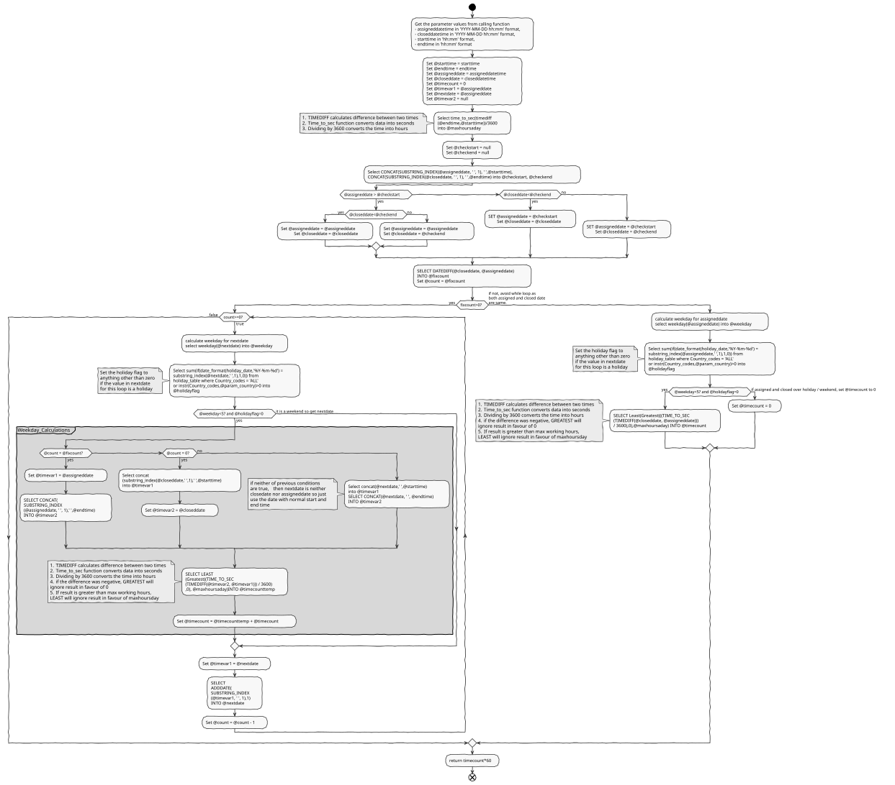

MySQL function to calculate elapsed working time

I wrote this function to cater for a specific requirement and I don’t know if there are better ways of doing it but this saved tremendous amount of time and might have real time application elsewhere.
Problem Statement:
Find out the age of an incident in working minutes, given the following:
- Time and Date of when an incident was logged
- Time and date of when the same incident was closed
- Opening time of the site for which the incident was logged
- Closing Time of the site for which incident was logged
- Country of the site for which incident has been logged
Assumption: It is assumed that opening and closing times are same on all working days and that all the sites are closed on holidays and weekends
Function should take all the above five “given” as parameter and then calculate age of the incident.
Example of problem
Let’s say an incident was logged on “Friday 10th June 2016 at 12:00” for a site in the “UK” which opens between 09:00 to 16:00. This incident was then closed on “Tuesday 14th June 2016 at 14:00”.
For the above incident function should calculate the age as 960 minutes = 16 hours = [4 hours on Friday (12:00 to 16:00) + 7 hours on Monday (09:00 to 16:00) + 5 hours on Tuesday (09:00 to 14:00)]
Pre-requisites:
A holiday table for the “Country” of the site for which incident is being provided should already be created on the database with the name holiday_table. Created using code below:
1
2
3
4
5
6
7
8
9
10
11
CREATE TABLE `holiday_table` (
`holiday_table_id` INT(11) NOT NULL,
`holiday_date` DATETIME NULL DEFAULT NULL,
`week_day` VARCHAR(12) NULL DEFAULT NULL,
`holiday_name` VARCHAR(45) NULL DEFAULT NULL,
`Country_codes` VARCHAR(45) NOT NULL DEFAULT 'ALL',
PRIMARY KEY (`holiday_table_id`)
)
COLLATE='utf8_general_ci'
ENGINE=InnoDB
;
Sample sql-insert Data for holiday_table:
1
2
3
4
5
6
7
8
9
10
11
12
13
14
15
16
17
18
19
20
21
INSERT INTO `holiday_table` (`holiday_table_id`, `holiday_date`, `week_day`, `holiday_name`, `Country_codes`) VALUES (2, '2016-03-25 00:00:00', 'Friday', 'Good Friday', 'ALL');
INSERT INTO `holiday_table` (`holiday_table_id`, `holiday_date`, `week_day`, `holiday_name`, `Country_codes`) VALUES (3, '2016-03-28 00:00:00', 'Monday', 'Easter Monday', 'ALL');
INSERT INTO `holiday_table` (`holiday_table_id`, `holiday_date`, `week_day`, `holiday_name`, `Country_codes`) VALUES (4, '2016-05-02 00:00:00', 'Monday', 'Early May bank holiday', 'ALL');
INSERT INTO `holiday_table` (`holiday_table_id`, `holiday_date`, `week_day`, `holiday_name`, `Country_codes`) VALUES (5, '2016-05-30 00:00:00', 'Monday', 'Spring bank holiday', 'ALL');
INSERT INTO `holiday_table` (`holiday_table_id`, `holiday_date`, `week_day`, `holiday_name`, `Country_codes`) VALUES (6, '2016-08-29 00:00:00', 'Monday', 'Summer bank holiday', 'ALL');
INSERT INTO `holiday_table` (`holiday_table_id`, `holiday_date`, `week_day`, `holiday_name`, `Country_codes`) VALUES (7, '2016-12-26 00:00:00', 'Monday', 'Boxing Day', 'ALL');
INSERT INTO `holiday_table` (`holiday_table_id`, `holiday_date`, `week_day`, `holiday_name`, `Country_codes`) VALUES (8, '2016-12-27 00:00:00', 'Tuesday', 'Christmas Day (substitute day)', 'ALL');
INSERT INTO `holiday_table` (`holiday_table_id`, `holiday_date`, `week_day`, `holiday_name`, `Country_codes`) VALUES (9, '2016-01-01 00:00:00', 'Friday', 'New Year’s Day', 'SG');
INSERT INTO `holiday_table` (`holiday_table_id`, `holiday_date`, `week_day`, `holiday_name`, `Country_codes`) VALUES (10, '2016-02-08 00:00:00', 'Monday', 'Chinese New Year', 'SG');
INSERT INTO `holiday_table` (`holiday_table_id`, `holiday_date`, `week_day`, `holiday_name`, `Country_codes`) VALUES (11, '2016-02-09 00:00:00', 'Tuesday', 'Chinese New Year', 'SG');
INSERT INTO `holiday_table` (`holiday_table_id`, `holiday_date`, `week_day`, `holiday_name`, `Country_codes`) VALUES (12, '2016-05-21 00:00:00', 'Saturday', 'Vesak Day', 'SG');
INSERT INTO `holiday_table` (`holiday_table_id`, `holiday_date`, `week_day`, `holiday_name`, `Country_codes`) VALUES (13, '2016-07-06 00:00:00', 'Wednesday', 'Hari Raya Puasa', 'SG');
INSERT INTO `holiday_table` (`holiday_table_id`, `holiday_date`, `week_day`, `holiday_name`, `Country_codes`) VALUES (14, '2016-08-09 00:00:00', 'Tuesday', 'National Day', 'SG');
INSERT INTO `holiday_table` (`holiday_table_id`, `holiday_date`, `week_day`, `holiday_name`, `Country_codes`) VALUES (15, '2016-09-12 00:00:00', 'Monday', 'Hari Raya Haji', 'SG');
INSERT INTO `holiday_table` (`holiday_table_id`, `holiday_date`, `week_day`, `holiday_name`, `Country_codes`) VALUES (16, '2016-10-29 00:00:00', 'Saturday', 'Deepavali', 'SG');
INSERT INTO `holiday_table` (`holiday_table_id`, `holiday_date`, `week_day`, `holiday_name`, `Country_codes`) VALUES (17, '2016-01-01 00:00:00', 'Friday', 'New Year’s Day', 'IN');
INSERT INTO `holiday_table` (`holiday_table_id`, `holiday_date`, `week_day`, `holiday_name`, `Country_codes`) VALUES (18, '2016-01-26 00:00:00', 'Tuesday', 'Republic Day', 'IN');
INSERT INTO `holiday_table` (`holiday_table_id`, `holiday_date`, `week_day`, `holiday_name`, `Country_codes`) VALUES (19, '2016-07-06 00:00:00', 'Wednesday', 'Idul Fitr', 'IN');
INSERT INTO `holiday_table` (`holiday_table_id`, `holiday_date`, `week_day`, `holiday_name`, `Country_codes`) VALUES (20, '2016-08-15 00:00:00', 'Monday', 'Independence Day', 'IN');
INSERT INTO `holiday_table` (`holiday_table_id`, `holiday_date`, `week_day`, `holiday_name`, `Country_codes`) VALUES (21, '2016-10-11 00:00:00', 'Tuesday', 'Dussehra/Durga Puja', 'IN');
INSERT INTO `holiday_table` (`holiday_table_id`, `holiday_date`, `week_day`, `holiday_name`, `Country_codes`) VALUES (22, '2016-10-31 00:00:00', 'Monday', 'Diwali Privilege Holiday/Gobardhan Puja', 'IN');
Function code and explanation
1
2
3
4
5
6
7
8
9
10
11
12
13
14
15
16
17
18
19
20
21
22
23
24
25
26
27
28
29
30
31
32
33
34
35
36
37
38
39
40
41
42
43
44
45
46
47
48
49
50
51
52
53
54
55
56
57
58
59
60
61
62
63
64
65
66
67
68
69
70
71
72
73
74
75
76
77
78
79
80
81
82
83
84
85
86
87
88
89
90
91
92
93
94
95
96
97
98
99
100
101
102
103
104
CREATE DEFINER=`root`@`localhost` FUNCTION `workday_time_diff_holiday_table`(
`param_country` varchar(10),
`assigneddatetime` varchar(20),
`closeddatetime` varchar(20),
`starttime` varchar(20),
`endtime` varchar(20)
)
RETURNS int(11)
LANGUAGE SQL
NOT DETERMINISTIC
CONTAINS SQL
SQL SECURITY DEFINER
COMMENT ''
BEGIN
Set @starttime = starttime;
Set @endtime = endtime;
Select time_to_sec(timediff(@endtime,@starttime))/3600 into @maxhoursaday;
Set @assigneddate = assigneddatetime;
Set @closeddate = closeddatetime;
Set @timecount = 0;
Set @timevar1 = @assigneddate;
Set @nextdate = @assigneddate;
Set @timevar2 = null;
Set @param_country = param_country;
############
/*Check if the assigned time was before the starttime
or closed time was after the endtime provided*/
#############
Set @checkstart = null;
Set @checkend = null;
Select CONCAT(SUBSTRING_INDEX(@assigneddate, ' ', 1), ' ',@starttime),
CONCAT(SUBSTRING_INDEX(@closeddate, ' ', 1), ' ',@endtime) into @checkstart, @checkend;
if (@assigneddate > @checkstart) then
if (@closeddate<@checkend) then
Set @assigneddate = @assigneddate;
Set @closeddate = @closeddate;
else
Set @assigneddate = @assigneddate;
Set @closeddate = @checkend;
end if;
else
if (@closeddate<@checkend) then
SET @assigneddate = @checkstart;
Set @closeddate = @closeddate;
else
SET @assigneddate = @checkstart;
Set @closeddate = @checkend;
end if;
end if;
####################
/*After above check, the assigneddate and closeddate
variables will be reset in accordance with the checks.*/
####################################
SELECT DATEDIFF(@closeddate, @assigneddate) INTO @fixcount; # check the difference between assigned date and closed date.
Set @count = @fixcount; # allocate the difference between closed date and assigned date to a counter
If @fixcount > 0 then # true if line 57 resulted in more than 1 then run the while loop on next line
while @count>=0 do # run the while loop until the count which is right now difference between closed and assigned becomes zero
select weekday(@nextdate) into @weekday; # Assign the weekday value to @weekday. Weekday returns o for Monday, 2 for Tuesday ...5 for Saturday and 6 for Sunday
/*Check if the date stored in nextdate
(which is assigneddate on first run of while loop and closeddate on last run)
is a holiday and set the holiday flag*/
Select sum(if(date_format(holiday_date,'%Y-%m-%d') = substring_index(@nextdate,' ',1),1,0))
from holiday_table
where Country_codes = 'ALL' or instr(Country_codes,@param_country)>0
into @holidayflag;
if ( @weekday<5 and @holidayflag=0) then #Proceed if the date in nextdate variable is neither weekend nor a holiday
if (@count = @fixcount) then #Check if it is first run.ie. if nextdate is assigneddate
Set @timevar1 = @assigneddate; #assign assigndate to variable timevar1
SELECT CONCAT(SUBSTRING_INDEX(@assigneddate, ' ', 1), ' ',@endtime) INTO @timevar2;#get site closing time on assigned date and store it on to timevar2
elseif (@count = 0) then #if the date in nextdate variable is closeddate then do the following otherwise proceed
Select concat(substring_index(@closeddate,' ',1),' ',@starttime) into @timevar1; #
Set @timevar2 = @closeddate;
else
Select concat(@nextdate,' ',@starttime) into @timevar1;
SELECT CONCAT(@nextdate, ' ', @endtime) INTO @timevar2;
end if;
SELECT
LEAST(Greatest(((TIME_TO_SEC(TIMEDIFF(@timevar2, @timevar1))) / 3600),0),@maxhoursaday)
INTO @timecounttemp;
Set @timecount = @timecounttemp + @timecount;
end if;
Set @timevar1 = @nextdate;
SELECT
ADDDATE(SUBSTRING_INDEX(@timevar1, ' ', 1),1)
INTO @nextdate;
Set @count = @count - 1;
end while;
else
#check if the assigned date / closed date is a holiday or weekend
select weekday(@assigneddate) into @weekday; # Assign the weekday value to @weekday. Weekday returns o for Monday, 2 for Tuesday ...5 for Saturday and 6 for Sunday
Select sum(if(date_format(holiday_date,'%Y-%m-%d') = substring_index(@assigneddate,' ',1),1,0)) from holiday_table where Country_codes = 'ALL' or instr(Country_codes,@param_country)>0 into @holidayflag; #Check if the date stored in assigneddate is a holiday and set the holiday flag
if ( @weekday<5 and @holidayflag=0) then #Proceed if the date in assigneddate variable is neither weekend nor a holiday
SELECT Least(Greatest(((TIME_TO_SEC(TIMEDIFF(@closeddate, @assigneddate))) / 3600),0),@maxhoursaday) INTO @timecount;
else
Set @timecount = 0;
end if;
end if;
RETURN @timecount*60;
END
Calling the function
Function will expect 5 parameters and with specific format as explained below:
- param_country - This is the country code as specified in holiday table
- assigneddatetime - This must be provided in the format
%Y-%m-%d %H-%i-%s. So for our example it will be 2016-06-10 12:00:00 - closeddatetime - This must be provided in the format
%Y-%m-%d %H-%i-%s. So for our example it will be 2016-06-14 14:00:00 - starttime - This must be in the format
%H:%i. So for our example it will be 09:00 - endtime - This must be in the format
%H:%i. So for our example it will be 16:00
The call for this function will be as below:
## To get number of minutes
Select `WORKDAY_TIME_DIFF_HOLIDAY_TABLE`('UK','2016-06-10 12:00:00','2016-06-14 14:00:00','09:00','16:00');
## To get number of hours
Select `WORKDAY_TIME_DIFF_HOLIDAY_TABLE`('UK','2016-06-10 12:00:00','2016-06-14 14:00:00','09:00','16:00')/60;
## To get in number of working days
Select (`WORKDAY_TIME_DIFF_HOLIDAY_TABLE`('UK','2016-06-10 12:00:00','2016-06-14 14:00:00','09:00','16:00')/60)/(substring_index('16:00',':',1)-substring_index('09:00',':',1));
Complete Flowchart
The plantuml code for this can be checked by copying the image link and decoding it on Plantuml Online Server
Leave a comment